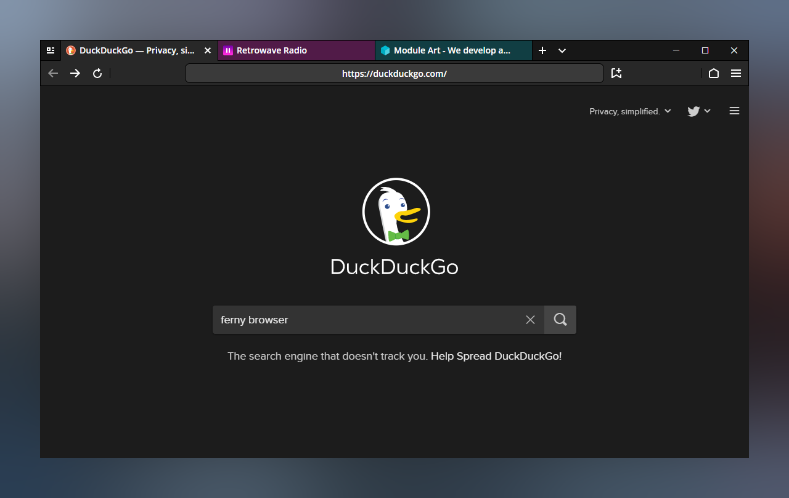
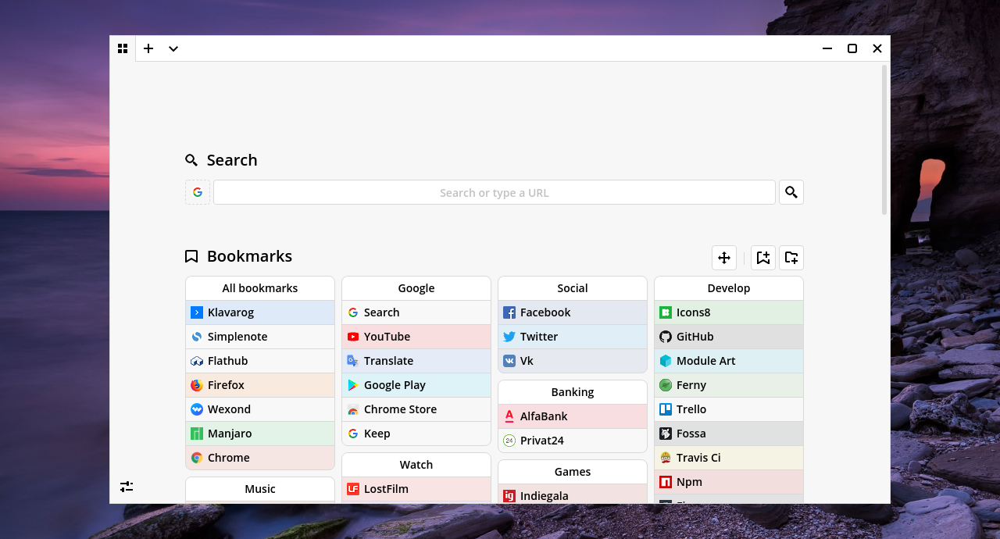
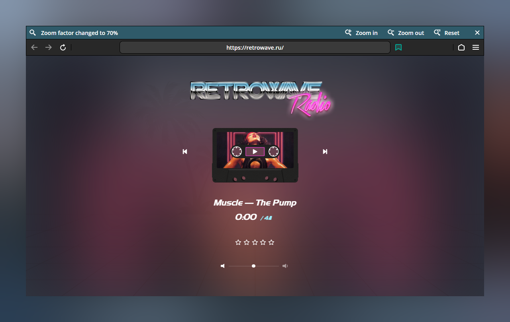
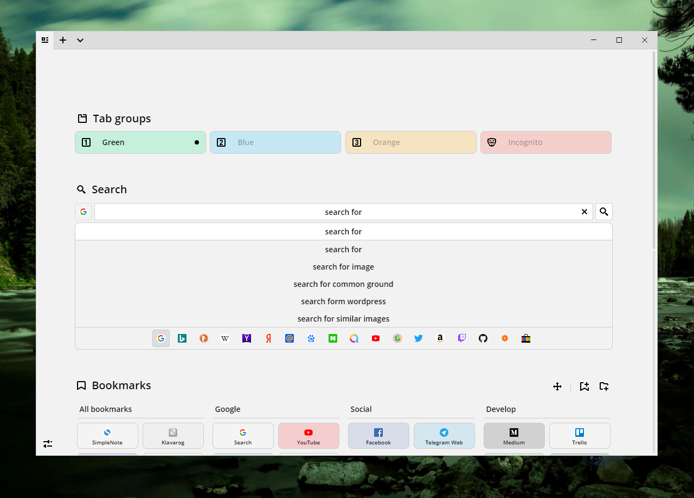
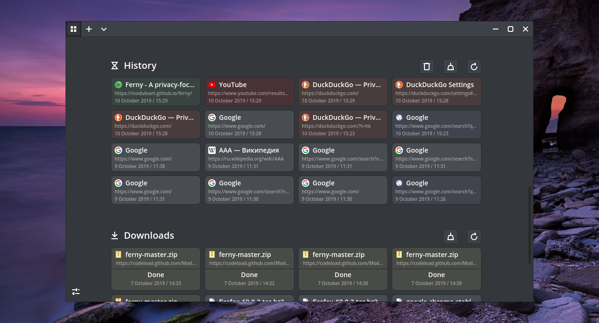
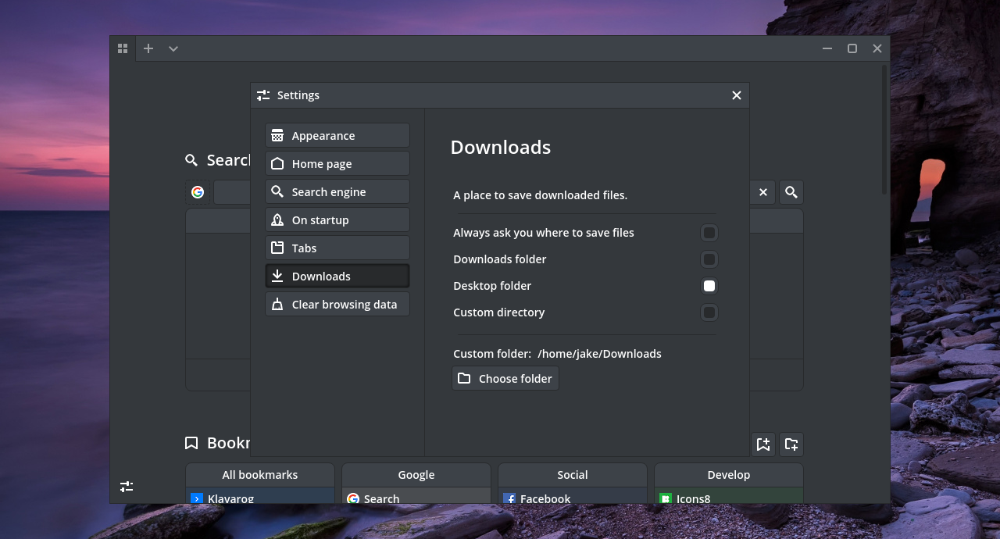

Ferny
Web Browser
Ferny is a privacy-focused, cross-platform, chromium-based web browser






Roadmap
Beta 3.0
New bookmark manager
Beta 3.1
Open with Ferny
Beta 3.2
Interface adaptivity
Release notes
November 9 / 2019
Beta v3.1.0 "Collections Update"
Tabs:
October 15 / 2019
Beta v3.0.4
Side menu:
October 9 / 2019
Beta v3.0.3
Changes:
October 5 / 2019
Beta v3.0.2
Tab menu:
October 1 / 2019
Beta v3.0.1
Changes:
September 29 / 2019
Beta v3.0.0 "Beta3 Update"
Major changes:
August 10 / 2019
Beta v2.1.0 "Module Update"
Better file support.
July 31 / 2019
Beta v2.0.0 "Ferny Update"
Color items:
July 10 / 2019
Beta v1.5.0 "Responsive Update"
Changes:
June 26 / 2019
Beta v1.4.4
Changes:
June 25 / 2019
Beta v1.4.3 "Tabs Update"
Changes:
June 22 / 2019
Beta v1.4.2 "Black Update"
Changes:
June 22 / 2019
Beta v1.4.1 "Progress Update"
Changes:
June 16 / 2019
Beta v1.4.0 "History Update"
Changes:
June 8 / 2019
Beta v1.3.4 "Gen6 Update"
Changes:
June 5 / 2019
Beta v1.3.3 "Gen5 Update"
Changes:
June 4 / 2019
Beta v1.3.2 "Icons Update"
Changes:
June 3 / 2019
Beta v1.3.1 "Custom Update"
Changes:
June 2 / 2019
Beta v1.3.0 "Sidebar Update"
• Improved web security (Disabled node integration, JQuery is working).
May 21 / 2019
Beta v1.2.1 "Design Update"
• ArrowFlat UI Design 2.1 (Removed shadows and borders).
May 21 / 2019
Beta v1.2.0 "Impression Update"
• New flat colors: blue, green, orange, red, light, gray, dark.
April 13 / 2019
Beta v1.1.0 "Context Update"
• New outlined icons style.
March 5 / 2019
Beta v1.0.0
Arrow Browser is available!
All updates